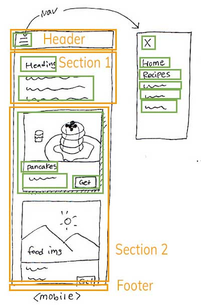
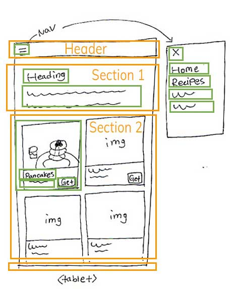
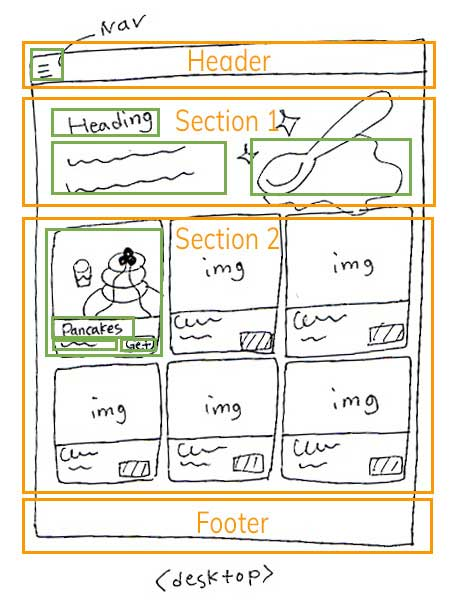
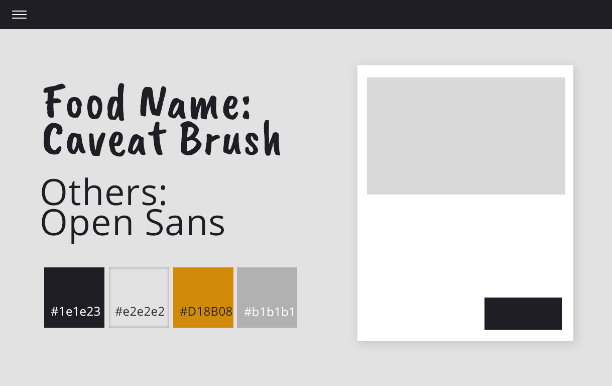

Design Guide for Gallery Site
Site Purpose
It is a site for sharing delicious recipes with people. The site will display photos of food and show how to cook easily at home. On the home page, the users will see the gallery of food, and then when the users click on the food they want to know recipes, they can see in detail how to make it on the detailed page.
Target Audiences
People who are interested in cooking food with various age groups. As users of various age groups are expected, the layout and menu naming should be made so that anyone could know its meaning.
Mood Board
Here's the board. I used Pinterest.
Design Sketch

Mobile view

Tablet view

Desktop view
Color Palette
I will use a monotone color palette to make the users focus on the colors of food. The one point color that I'll use is the mustard color. It is to give some points to the headings of the recipe's detail page.
Fonts
The fonts that I use are Google fonts. For the name of the recipe, I’ll use the Caveat brush font. Following Google Font's recommendation of a combination, I will use Open Sans on the rest parts.
Caveat Brush: https://fonts.google.com/specimen/Caveat+Brush
Open Sans: https://fonts.google.com/specimen/Open+Sans
Style Tile
